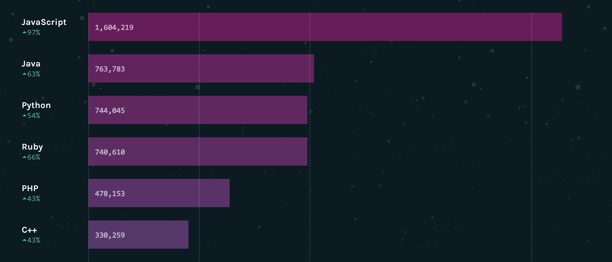

Welcome To Social Web Programming
Take a sheet of paper
Write your name on one side
On the other side write your best guess of Buffy's weight
Introductions
Instructors : Scott Allen Cambo and Emily Wang
* Who we are
* Who you are
Why Teach This Workshop?
Software is a bigger part of our lives than ever and more people want to learn to program than ever.
One of the best ways to learn to program is in a social setting.
* I'm here teaching this workshop today for two reasons
1. Software is a bigger part of lives than ever and more people want to learn to program than ever.
* This is great. At the least, you should want to learn something that has a big impact on your life and at the worst you should try something
that a great many people have derived a lot of joy from doing.
2. One of the best ways to learn to program is in a social setting.
* What I mean is that there is a way in which we often discuss
programming in the context of computer science or computational
thinking.
* That makes sense, in a university one often begins learning to
program in a computer science class and programming is used as a way
to put those concepts in to practice.
* In this class, we'll try a different approach which will be mainly
grounded in the ideas of **open-source** and **peer production**.
What is open source?
Open Exchange
Participation
Rapid Prototyping
Meritocracy
Community
Democracy (Code and Other Laws by Lawrence Lessig)
Credit to opensource.com
* Open Exchange : Information is freely available. We can freely exchange designs, instructions, code
* Participation : We are free to collaborate and discuss solutions together.
* Rapid Prototyping : fast prototypes lead to quicker failures and there is
the idea that the quicker we fail, we quicker we can discover how to succeed.
* Meritocracy : The best idea wins. Seems obvious, but often a less than optimal idea can simply corner a market preventing better ideas from succeeding.
* Community : Communities will often form around a common purpose bringing together diverse ideas.
* Democracy : I'll also add this as it is a point that people like Lawrence Lessig have started to make which is that with so much of our society being
computationally driven that programmers are not just people who can make
software, they are people who get to decide the structure of modern society.
Google decides how we find information, Amazon decides how we find things to buy, Facebook decides how we learn what our friends are doing. Software
is a powerful institution and for those institutions to be democratic, we'll
need a way to participate. Open source is a way that we can participate
in those institutions.
## Note : Mike Devito and I often teach a Computing Everywhere workshop
where we discuss algorithmically driven components of culture
and society in a bit more detail. Keep an eye out for that
if you find this interesting.
Social Web Programming
* I chose the name *Social Web Programming* because
* we will be focusing on web technologies, specifically javascript
* To do this, we'll leverage a social web meaning that we'll learn
how to use both the people here in this class and the people on the
web to answer questions that come up.
* Github : We'll learn to use github, so that we can find open source
projects, read their code, and participate in the projects
* Workshop Github : This is the first time I'm teaching this workshop and while
I am the instructor, you are the community that will benefit from it. Throughout
the class, I'm going to be asking you to give lots of feedback to me and your classmates.
GitHub
What even is that?
Git : version control softwareGitHub : A Hub for projects that use Git
Let's take a look : https://github.com/scottofthescience/social_web_programming
* Git : how many of you have used "Track changes" in MS Word?
* This is sort of like that, but the idea is that we can scale to many more people and use this for code
* Github : This is the hub. This is where the code goes when we want other people to see it so that they can comment on it or integrate it or work on it.
# You won't learn everything about Git and GitHub today for a couple reasons. The first is that there are
a lot of ways that you can use Git and Github. It's a very flexible system. So exactly how you should use it depends on the needs of the community and the project.
* On the front page :
* README.md
* /docs : files for a webpage for our project
* /slides : That's where these files are
* LICENSE tells people how they can or cannot use this content.
* Issues
* There is much more that we won't have time to discuss today so I encourage you to look at some of the resources
Our Own QA Platform
Write your name
Write a question related to Computer Science or programming or something you heard here today that you are pretty sure you do NOT understand
Exploring the Github universe
What kind of open source project would you like to join or start?
Add it to the list and leave a description
## This is more for me to know what brings you here today.
* I want you to get a sense of the kinds of creative things you can do with code and open source
* This will help you think more about how you could apply what you learn today.
* When you come across a term that you don't know, please write it in the document
The Wisdom Of Crowds
Why the Many Are Smarter Than the Few and How Collective Wisdom Shapes Business, Economies, Societies and Nations
* Now, there are a lot of ways in which crowds are not wise, but I want to bring up two reasons here
that we can leverage ideas collectively learn more about programming even if nobody in the room
feel comfortable calling themseles an expert.
1. **There is a lot of knowledge in this room** We each may have heard and understood a different part of an answer and by asking questions
and communicating with each other, we can put all those pieces together to form an answer.
2. **There is a lot of diversity in this room** meaning that if we each have a tendency to make different kinds of mistakes, then we can aggregate our weak answers to approximate a really good answer.
#ColdStartProblems
What if I have a stupid question?
What if my answer isn't right?
### Pretty much everyone at some point has hesitated to ask a question for fear of being judged.
* There are no stupid questions, but there are better ways to get help than others and we'll talk about that.
* We also worry about whether or not our answer is good enough. It's totally natural. What if I'm wrong and you go down the wrong path?
Asking a Good Question
What is my best guess?
Why is it my best guess? What have I tried?
Where am I confused? What didn't work?
Providing A Good Answer
Answer the question If you have the same problem and don't have a solution, share everything
that you have tried too
Share how you know this answer. Provide links and context for them.
Write clearly
Always be polite
* Why would I emphasize that you should answer the question?
* How many of you have had this happen where you ask someone a question like "Hey,
is the Social Web Programming workshop on Sunday." and they say something like "
You don't want to take that class, it's stupid."? Did that answer the question?
* You can help without having the entire solution.
* If you have the solution, share WHY it's the solution if you can.
Take 5 minutes to expand on your question
Take 5 minutes to try and provide an answer
* go back to the google sheet
Question Answering Platforms
StackExchange.com
Quora.com
Reddit (sometimes)
Yahoo! Answers
* Ok, so these are two of the major question answering websites.
* They are very different, but work under the same basic principles.
* Take a moment and go to stackexchange.com > All Sites (upper right hand corner)
* Stack Overflow is the first and easily the most active stack exchange site.
* If you start programming a lot, you'll probably refer to this site all the time.
* Take about 10 minutes and find a topic here that you might know something about. In 10 minutes, I want you to either answer a question or ask a question.
* 5 minutes for discussing one of the solutions.
*Quora is similar, except that you can solicit opinions too. Typically, it's not for programming help, but more for general advice.
Review what we learned so far
What open source is and why it's a good way to learn to program
How to use Git and Github to find a project, and clone it
How to ask good questions, provide good answers, and where to do it
## Take 5 to 10 minute break, start programming when everyone gets back
Languages of the web
HTML : markup language
CSS : style Sheet
Javascript : programming language
* HTML dictates the content and basically in what order it should appear
* CSS dictates how it should look and basically where it should go
* javascript is where the really dynamic and cool stuff is. We are going to focus on this because what you learn from javascript is more broadly applicable to other programming languages like Python, C++, or Java
Opening A Webpage
Your web browser makes a request for a webpage to a computer or server that is found using the Universal Resource Locator (URL)
The server sends back all the CSS, HTML, Javascript, Images, Videos, Sounds, etc. that your browser needs to build the website
The browser starts looking at the stuff coming back and puts it together
to make the webpage that you see
Developer Tools
Looking at the HTML, CSS, Javascript in the source code
Looking at how the Document Object Model (DOM) was constructed
* Show the Northwestern website
* Show how inspector works
* Show the CSS rules applied on the right
* Show the weird things you can do by rewriting things with
Sandbox.html
File > "Open File..." > find "sandbox.html" in root directory of cloned github repository
* Emily may need to help people find their github directories
* Show people the different sections
* Explain indentation and comments
* Comments are really really helpful when you are working with other people
HTML Elements
HTML Elements
HTML Elements
HTML Elements
HTML Elements
HTML Elements
HTML Elements
HTML Elements
Nesting and Attributes
The quick brown fox jumps over the lazy
The quick brown
fox
jumps over the lazy
* don't forget to point out class so that we can talk about it next
Classes and IDs
Classes are used to select groups of elements
IDs are used to select a unique element
* Show them the classes and IDs in sandbox.html
During the pizza break :
reiterate your questions in the sheet
try at least one answer
Psst : It's okay to Google things too
Javascript
The most common language on the web by far...

* Part of the reason is that web app/site programming is by far the most
popular form of programming and javascript is the main language there
* The other part is that it's very flexible. You can use it in weird ways and people have found a lot of new uses for it.
* Things can build on top of it easy like jQuery or D3.js or even these slides
which are in Reveal.js
Github Gists
A place to share code...
Link is in README.md
Assigning Variables
Copy the "assigning_variables_snippet.txt" into sandbox.html
...